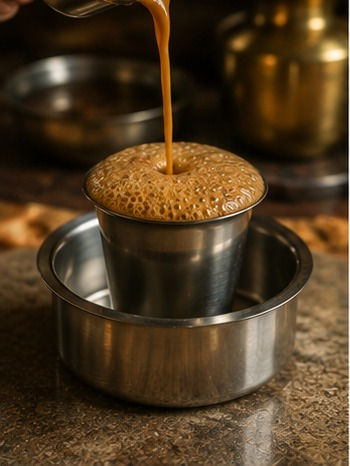
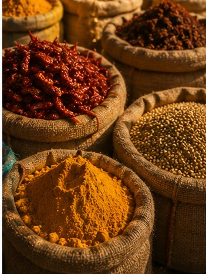
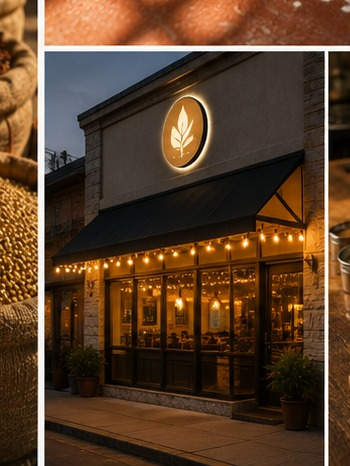
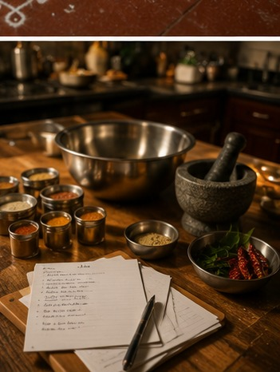

Migration Since the 1950s
Iyengars have been part of the broader Indian diaspora since the 1950s, and today the United States is home to one of the largest Iyengar populations outside India. As families settled abroad, they adapted to their host countries in countless ways — language, dress, careers — while the cuisine remained the one thread that stayed largely unchanged, even as sourcing its ingredients became a genuine challenge.


Edison, New Jersey
Not far from New York City sits Edison, New Jersey — named for Thomas Edison, who ran his main laboratory in the town's Menlo Park section. Today, over a quarter of Edison's population is of Indian descent, making it one of the largest concentrations of Indian Americans anywhere in the country. Its "Little India" district is home to more than 400 Indian-owned businesses, a substantial share of them restaurants.
Swagath Gourmet
No visit to Edison is complete without Swagath Gourmet, established in 1991 by Sesha Iyengar. What began as a restaurant serving traditional Iyengar fare is today run by Sesha alongside his older brother Murali and sister-in-law Padma — Sesha manages the front of house while Murali and Padma helm the kitchen. Over three decades, the menu has grown to include both Iyengar and Kannadiga dishes, and even Indo-Chinese and North Indian items, reflecting how immigrant food businesses evolve alongside their communities. Many such family-run restaurants now also teach cooking classes, passing their culinary heritage on to a generation raised abroad.

Temple Canteen & Semma
South Indian vegetarian food has found real prominence in New York. The Temple Canteen serves Jain- and Iyengar-friendly Tamil food and has counted celebrities and food critics — including Padma Lakshmi and Anthony Bourdain — among its patrons. Not far away is Semma, widely recognized as the world's only Michelin-starred restaurant built around South Indian cuisine — concrete proof that this food tradition can hold its own at the very top of the global culinary conversation.

Adaptation Without Erasure
Abroad, hard-to-find ingredients like Manathakkali and Veepampoo could often only be sourced through family bringing them from India. Many households turned to onion and garlic for everyday cooking, reserving strict sattvic preparation for religious occasions — and younger generations, facing the cuisine's more demanding dietary restrictions, have gradually folded in Western vegetables once considered unthinkable in a traditional Iyengar kitchen. Mathru Baho exists in that same spirit of adaptation: making the real spice blends easy to find again, wherever in the world you've landed.